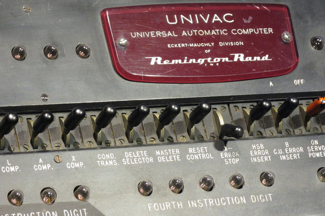
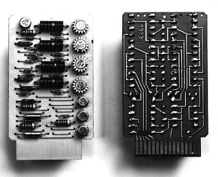
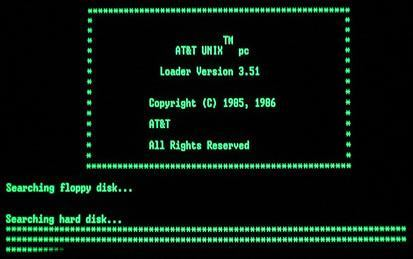
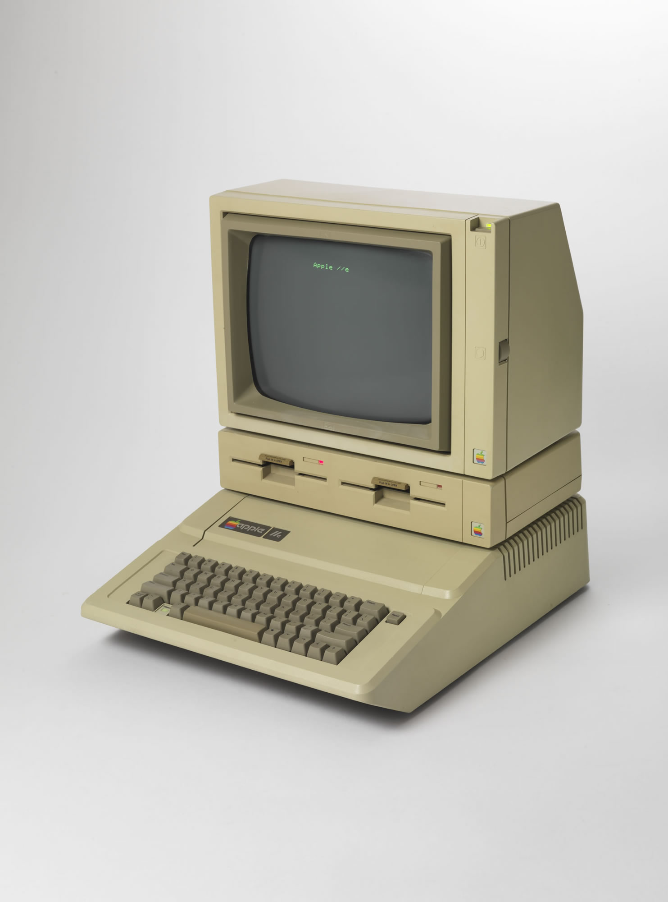

1945-1955: Tietokoneiden kehittäminen alkoi toisen maailmansodan aikana Yhdysvalloissa.
Ensimmäiset elektroniset tietokoneet kuten ENIAC ja UNIVAC olivat suuria ja kalliita,
ja niitä käytettiin lähinnä tieteellisiin laskelmiin ja sotilastarkoituksiin.
ENIAC oli valtava kone, joka painoi yli 27 tonnia ja täytti huoneen kokoisen tilan.
UNIVAC oli yksi maailman ensimmäisistä kaupallisista tietokoneista, jota käytettiin tilastoanalyysissä.

1955-1965: Transistorit ja IBM.
Vuonna 1958 esiteltiin transistorit, jotka olivat ensimmäinen askel kohti pienempiä ja tehokkaampia tietokoneita.
IBM tuli hallitsevaksi tietokoneyritykseksi tänä aikana. IBM:n transistori kehitettiin
yrityksen tutkimuslaboratoriossa vuonna 1954.
Se oli yksi ensimmäisistä transistoreista, jotka oli valmistettu silikonipohjaisesta materiaalista.

1965-1975: Keskusyksiköiden aikakausi.
Keskusyksikköarkkitehtuuri korvasi edellisen putkiteknologian ja transistorit.
UNIX-käyttöjärjestelmä kehitettiin tänä aikana ja
ARPANET:in kaltaiset verkot loivat pohjan tuleville tietoverkoille.
UNIX on ollut merkittävässä roolissa tietotekniikan kehityksessä,
ja se on toiminut pohjana monille muille käyttöjärjestelmille, kuten Linuxille ja Mac OS:lle.

1975-1985: Mikrotietokoneiden ja henkilökohtaisten tietokoneiden aikakausi.
Mikrotietokoneiden kehitys teki tietokoneista edullisempia ja helpommin saatavilla.
Apple II ja Commodore PET olivat ensimmäisiä henkilökohtaisia tietokoneita.
Microsoftin MS-DOS -käyttöjärjestelmä hallitsi tätä aikaa.
MS-DOS kehitettiin IBM PC-tietokoneiden käyttöjärjestelmäksi vuonna 1981.
Se mahdollisti IBM:n tietokoneohjelmien suorituksen, tallennuksen ja lataamisen.
1985-1995: GUI ja World Wide Web.
GUI-käyttöliittymät (Graphical User Interface) kuten Macintoshin käyttöliittymä ja Windows 95 teki
tietokoneiden käytöstä helpompaa ja käyttäjäystävällisempää.
World Wide Web kehitettiin 1990-luvun alussa. Se mullisti tietojen jakamisen ja hakemisen.
WWW (World Wide Web) kehitti englantilainen tietotekniikkainsinööri
Tim Berners-Lee vuonna 1989 työskennellessään CERN:issä (Euroopan hiukkasfysiikan tutkimuskeskus).